This is in continuation of my previous blog post about trying to get the XNU kernel running on the Raspberry Pi 3.
In my previous blog post, I had modified the bootloader limine to load and run the Mach-O XNU kernel but later on in the kernel wfe_timeout_init would fail.
I decided to patch those instructions out and continue execution but it kept failing usually in stages where it involved reading the device tree such as ml_parse_cpu_topology.
I decided to look up more attempts of other people trying to get XNU running on the BCM2837. I stumbled across this fork of u boot and decided to try it out.
I built the u-boot fork and ran it under qemu and it worked so much better.
The kernel made it through the functions that it was failing before such as ml_parse_cpu_topology. However it crashed right after arm_vm_init.
The crash occurred later on when it tried accessing the device tree again.
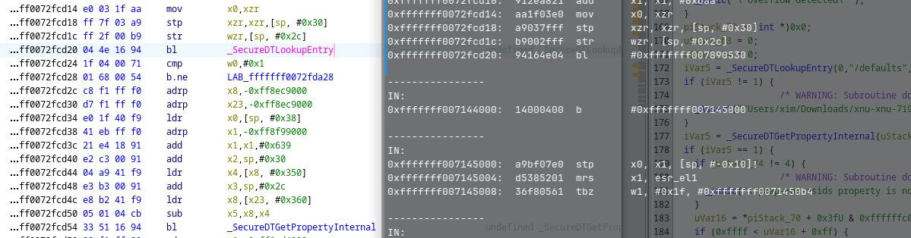
The kernel crashes at SecureDTLookupEntry
After looking around a bit in the kernel and how the page tables were setup the patch was relatively simple.
// in osfmk/arm64/arm_vm_init.c:2070
#if XNU_MONITOR
for (vm_offset_t cur = (vm_offset_t)pmap_stacks_start; cur < (vm_offset_t)pmap_stacks_end; cur += ARM_PGBYTES) {
arm_vm_map(cpu_tte, cur, ARM_PTE_EMPTY);
}
#endif
PE_slide_devicetree(gVirtBase - gPhysBase); // Added because the 1:1 physical mappings are gone and
// we don't want to continue accessing those old addresses
pmap_bootstrap(dynamic_memory_begin);
disable_preemption();
/*
* Initialize l3 page table pages :
* cover this address range:
* 2MB + FrameBuffer size + 10MB for each 256MB segment
*/
After the patch and recompiling the kernel it worked. It made it to the UART initialization and I was able to view the kernel messages!
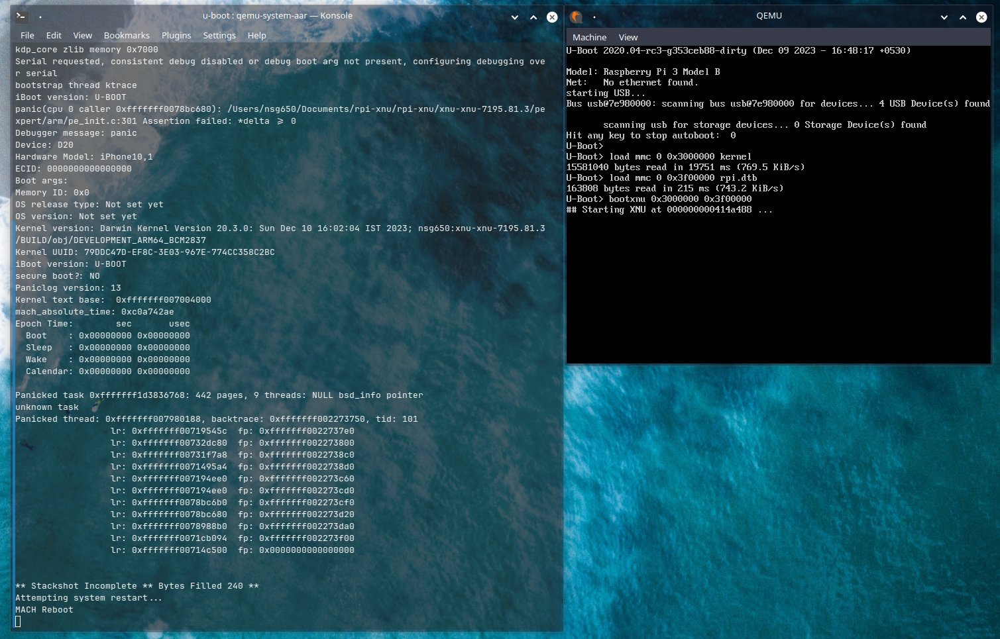
It booted!
I checked the kernel arguments used by chenguokai and managed to get to the same place where he had gotten as well.
|
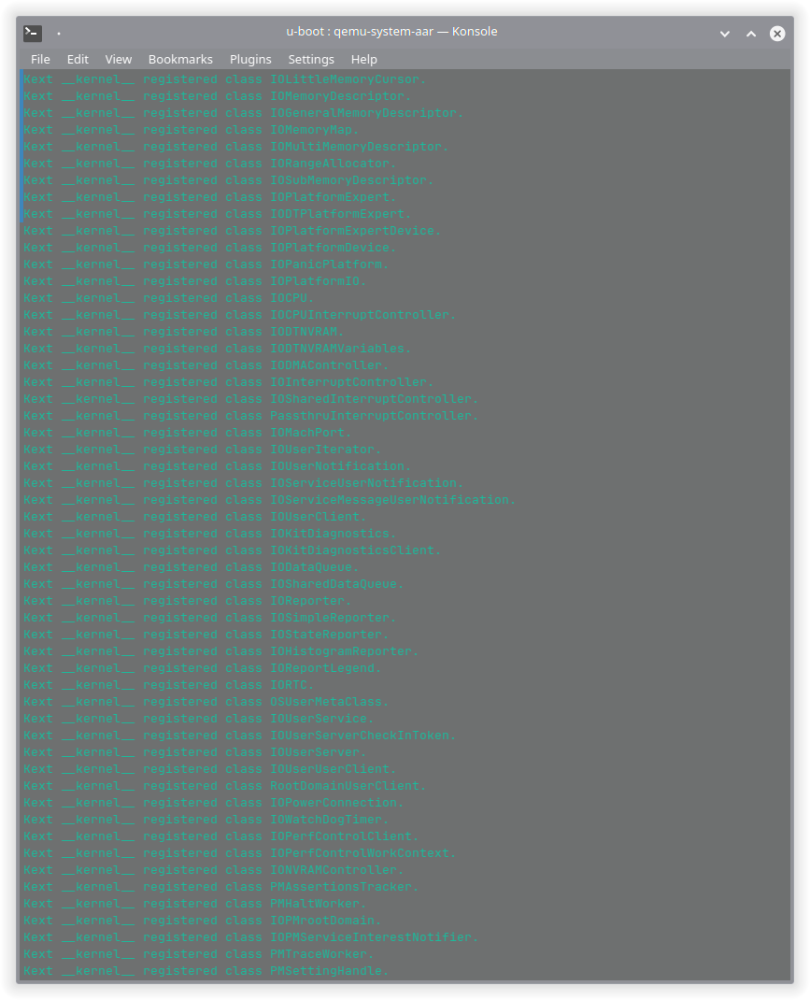 |
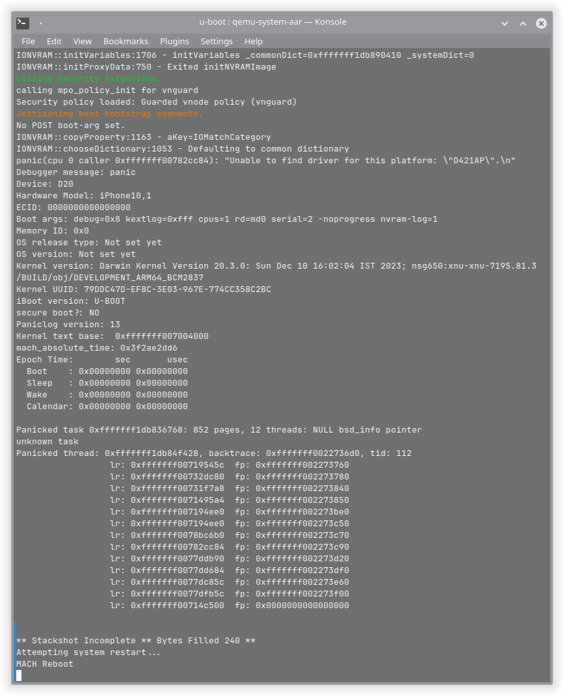 |
|---|
Now that it worked under qemu I decided to test on real hardware
I decided to try it out on my Raspberry Pi 3 B+. Since my Raspberry Pi had a broken sd card slot I decided to USB boot it. Preparing the USB was easy.
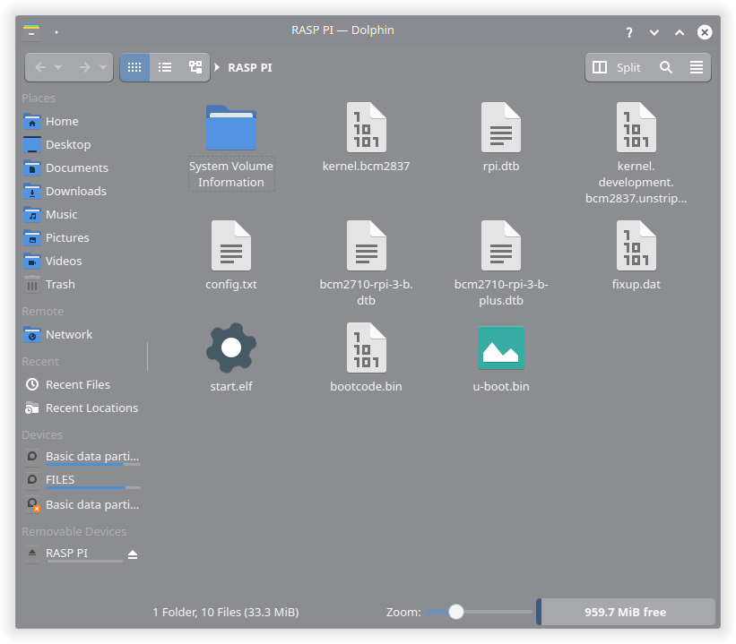
Files on the USB.
I copied over the kernel and the dtb used along with the dtb for u-boot, bootcode.bin, start.elf, the u-boot binary and a basic config.txt file. The content of the config file is the following.
kernel=u-boot.bin
arm_64bit=1
device_tree=bcm2710-rpi-3-b-plus.dtb
Next thing was wiring up the appropriate GPIO pins for UART on the Pi. XNU sets up GPIO Pin 14, 15 on the Pi for UART.
Here is a little trick, If you don't have a UART to USB adapter on hand you can use an existing microcontroller board. Make sure it's operating voltage matches the device you are trying to debug.
For the microcontroller board just disable the chip itself. Usually this involves setting the reset pin to ground (on Arduinos) or setting the enable pin to ground (on ESP8266/32 which is what I was using for this).
Then simply wire up the TX on the Pi to RX on the microcontroller board (or TX in my case since the labeling was incorrect on the board :P).
|
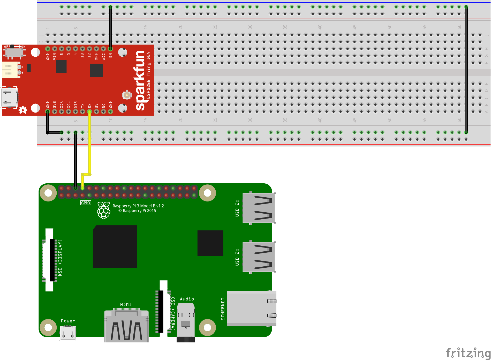 |
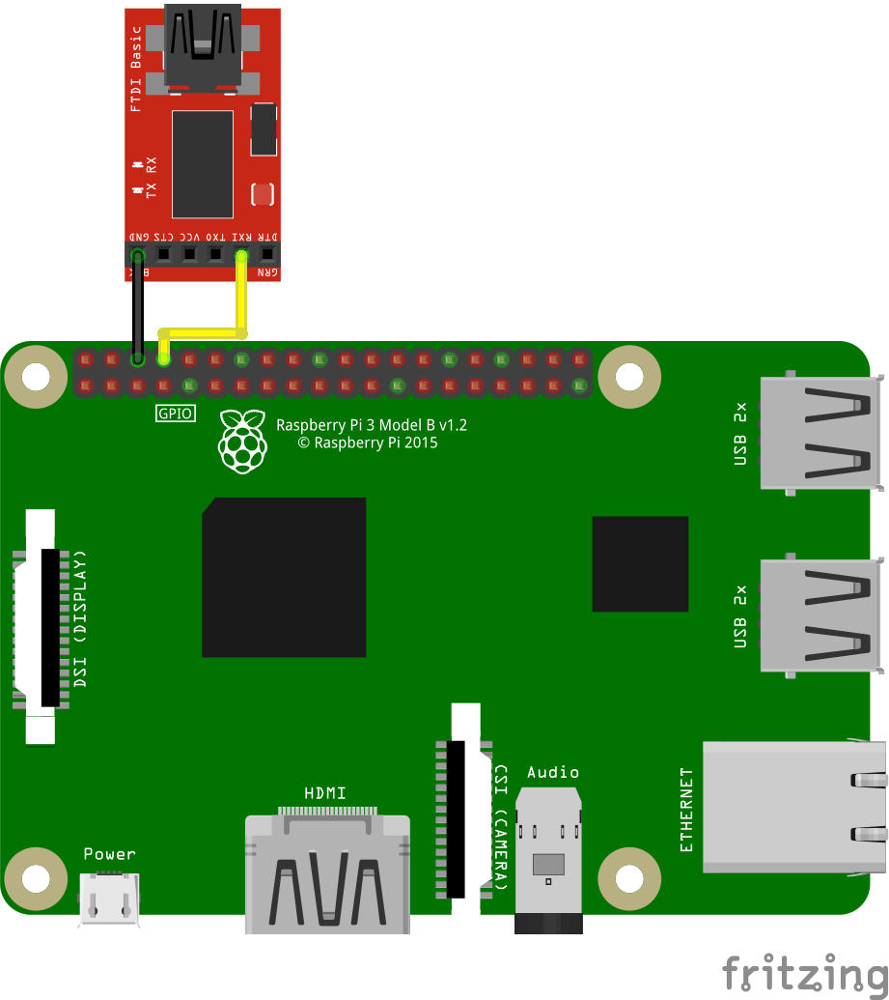 In case you have a USB to UART adapter then you would wire it up in the following manner. |
|---|
I had not set up TX since I didn't want to risk frying anything and we don't have any form of input yet so it did not make sense setting it up.
Well did it work on real hardware after all this?
YES! It did!
|
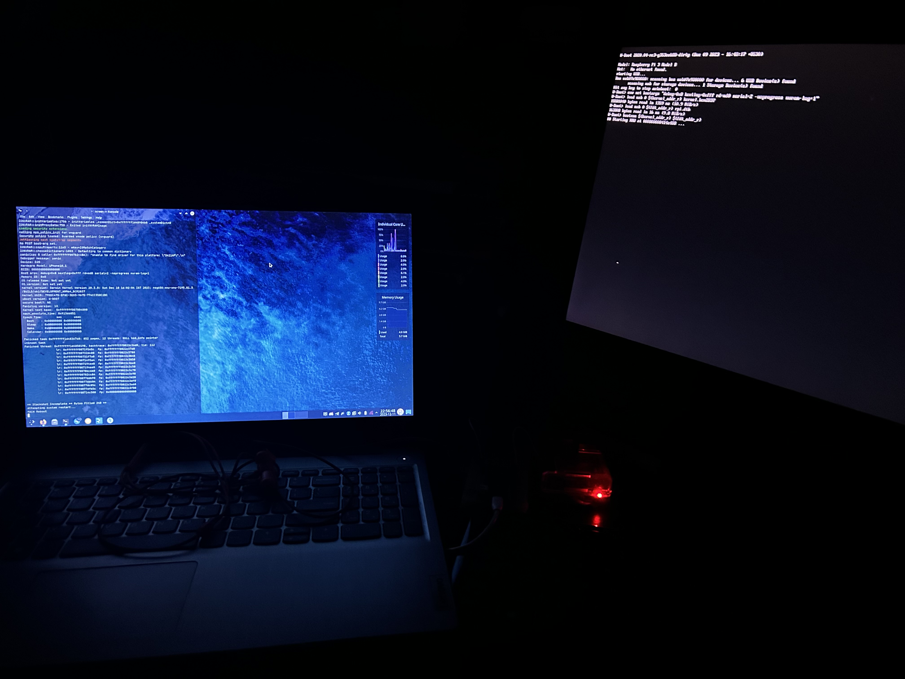 |
|---|
|
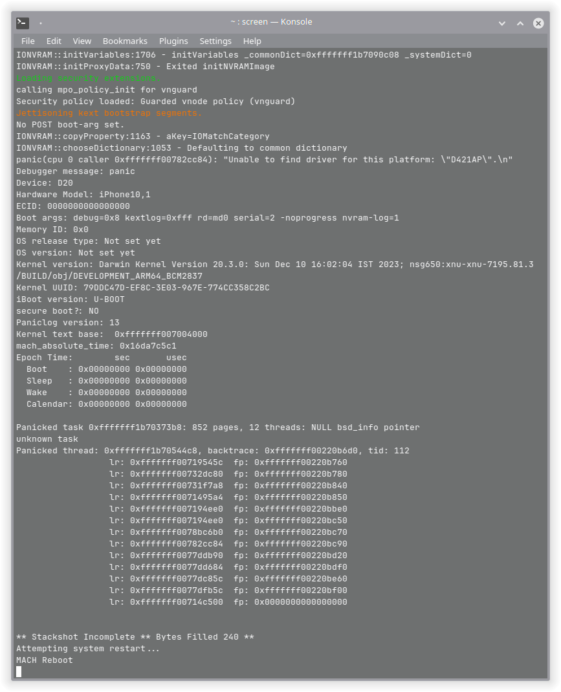 |
I also tested it on a Raspberry Pi 3 B at my school and it worked on it as well.
|
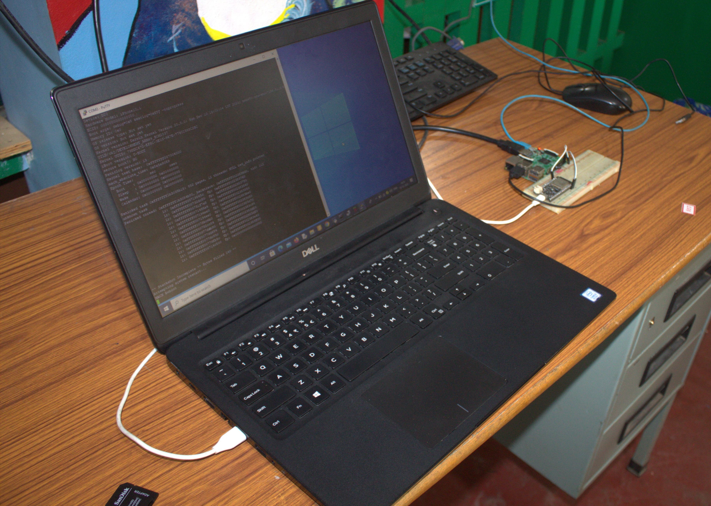 |
|---|
|
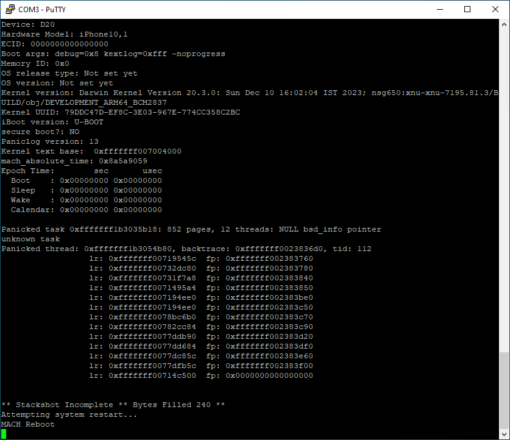 |
You need to build the u-boot fork and the XNU kernel or you can use the precompiled binaries over here.
I cloned the repo and ran the following commands
make clean; make mrproper; make distclean
export CROSS_COMPILE=aarch64-none-elf-
make rpi_3_defconfig
make menuconfig
make -j8
If you are building on linux it might fail to build. In such a case you have to revert this commit.
In the menu config navigate to Command line interface->Boot Commands and enable bootxnu and save it.
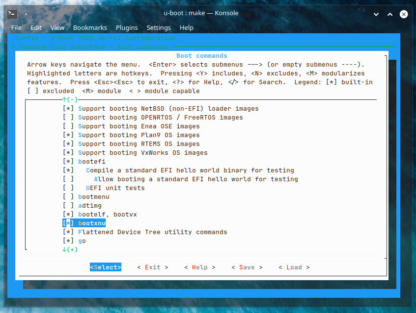
u-boot menu config with bootxnu option enabled
After it is done building you should be left with a u-boot.bin file.
The XNU kernel source used here is from chenguokai's writeup. You can find it here.
Make sure to do a clean build. For the build steps I just followed this guide.
Apply the patch I mentioned above and then build it using the following command.
make SDKROOT=macosx ARCH_CONFIGS=arm64 MACHINE_CONFIGS=bcm2837 KERNEL_CONFIGS=development LOGCOLORS=y -j4
After it's done building you should be left with the kernel.development.bcm2837 file
To run it under qemu, I made a simple virtual disk image, formatted as MBR FAT32 and copied over the kernel file and the rpi.dtb file. To run it, I used the following command.
qemu-system-aarch64 -M raspi3b -kernel u-boot.bin -serial file:/dev/stdout -serial file:/dev/stdout -serial file:/dev/stdout -usb \
-device usb-mouse -device usb-kbd -drive file=test.img,if=sd,format=raw -m 1024
Once you drop to the u-boot shell run the following commands.
load mmc 0 ${kernel_addr_r} kernel.bcm2837
load mmc 0 ${fdt_addr_r} rpi.dtb
env set bootargs "debug=0x8 kextlog=0xfff -noprogress"
Finally run the kernel with the command
bootxnu ${kernel_addr_r} ${fdt_addr_r}
I was super happy that I managed to get XNU running on the Pi at last. In the end I did not get to use my own bootloader but did learn a bit about the XNU kernel which helped me in patching it and I managed to get XNU running further.
Thank you so much for reading this blog post and Happy Holidays!